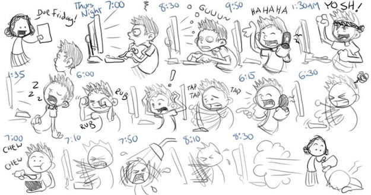

Everyone has their own unique way of studying and preparing for finals in college, but some methods are much more efficient than others. Unfortunately, an inefficient method of preparing for finals may be what keeps you from succeeding. Your finals are too important to mess up. Here are a few ways to stay on task and prepare yourself properly for the biggest exams of the year.
Study and complete the projects that will be worth more of your grade first. Make an ordered list of things to study and projects to complete based on time and importance. Without having some semblance of an agenda planned, it will become very easy for you to mismanage all of the study time that you have available to you. Know where you currently stand grade wise in your classes, so you know how well you will have to do on the final to get the grade you desire.
If you are behind in required class readings, you will have a lot of reading to do come finals. Make sure you learn the material the first time it's taught, so you don't have to go back and review it. Sometimes, if you pay good attention in class, you can forgo some of the required reading.
You can accomplish much more quality study time in an academic like atmospherethan studying at home. Cut out all distractions while brainstorming to help maintain your train of thought. Eliminating noisy distractions and working during the day when you are more alert are also great ways to improve efficiency when studying.
Be prepared for some seriously intensive study and plan for it accordingly. Study when it best suits you. Some people have more energy in the daytime, therefore study harder then, while others have higher efficiency during the late hours of the night. Find what works best for you and dedicate your more difficult tasks to these study times.
Show up at your professors office during office hours. Many professors office hours go unused by students, which is sad because they are such a great resource of information (they know what will be on the test). The professor will see your dedication and in doing so, it may even bump you up a grade.
College isn’t easy. One of the many challenges in the path toward a degree is the struggle to wake up and go to that early morning class. Many mornings are spent pondering hitting that snooze button again and deciding if you can afford to skip that 8am class. It’s a dilemma that can be very tempting as the reality of a short night hits you.
Lack of sleep is one of the biggest complaints by college students. It makes us fall asleep in class, affects class/test performance, and makes us rely on coffee just to get us through the day. It’s enough to make one question the amount of sleep they are getting.
It’s been long standing belief that we should all get 7-8 hours of sleep, but in reality it all comes down to the individual. There are some who can function just fine on 5-6 hours of sleep, while others require a full 8 hours of sleep. The trick is to find the proper balance by not under or oversleeping.
According to Stanford University, "the average sleep requirement for college students is well over eight hours, and the majority of students would fall within the range of this value plus or minus one hour."
Unfortunately not everyone has that much time to dedicate to sleep on a consistent nightly basis.

Researchers at UC Berkeley recently found when we sleep we boost our ability to learn. This happens in the part of the sleep that occurs just before we reach the deepestNREM sleep phase and the dream state known as REM sleep.
“A lot of that spindle-rich sleep is occurring the second half of the night, so if you sleep six hours or less, you are shortchanging yourself. You will have fewer spindles, and you might not be able to learn as much,” claimed Bryce Mander, a post-doctoral fellow in psychology at UC Berkeley who led the study.
Researchers said evidence that brain waves during the latter part of the sleep period promote our capacity to store fact-based memories raises the question of whether taking early morning classes is optimal for learning. “This discovery indicates that we not only need sleep after learning to consolidate what we’ve memorized, but that we also need it before learning, so that we can recharge and soak up new information the next day.”
Sleep not only refreshes the mind, but can make you smarter. The more hours we spend awake, the more sluggish our minds become. Therefore, pulling an all-nighter, a common practice at college during finals week, decreases the ability to learn new facts by nearly 40 percent, due to a shutdown of brain regions during sleep deprivation.
Knowing about sleeps impact on academic performance motivated Stanford to create asleep and dreams class and led colleges like Duke to eliminate 8am classes back in 2004. For those not lucky enough to get to sleep in, there are a few tricks you can do to help you become an early riser.
Naps are great. While over napping can screw up your sleep schedule, power naps actually work. Naps under one hour long nap can dramatically boost and restore brain power. Anything longer can make you feel more tired when you wake up. Even a 20 minute nap will greatly benefit anyone who feels they need a recharge as it will improve overall alertness, boost mood and increase productivity. Just try not to nap too late in the day. If you nap early enough in the day, it shouldn’t affect your normal sleep schedule. Additionally, taking a mid-day nap when you’re feeling fatigued will be better for you than any form of caffeine you plan to intake.
Over sleeping causes people to suffer from sleepiness throughout the day. Many people with hypersomnia experience symptoms of anxiety, low energy, and memory problems as a result of their almost constant need for sleep. Oversleeping has also been linked to a host of medical problems, including diabetes, heart disease, and increased risk of death.
The amount of sleep you need varies significantly over the course of your life. It depends on your age and activity level as well as your health and lifestyle habits. No one really needs to be sleeping more than 9 hours a night. It is important to find the proper balance of sleep because studies show that people who sleep 8 hours or more, or less than 6.5 hours, don't live as long as those who get between 6.5 and 7.5 a night.
Consumption of alcohol messes with the various sleep states your body goes through at night. While it might help you fall asleep faster, it typically results in a poorer quality of sleep and can cause multiple awakenings in the middle of the night. This poorer quality of sleep leads to a lengthened sleeping time and when sleeping, alcohol in your system disrupts what researchers call “sleep architecture” — the pattern of sleep and brain waves that leaves you feeling refreshed in the morning.
Sleeping arrangements in college don’t really make the most effective sleeping environment. Things can get loud. Trying to get to sleep while all this activity is going on around you can be difficult, but there are things you can do to help block out these distractions (like white noise).
For optimal sleep results, all digital equipment (computers, TV, etc.) should be turned off one hour before sleep time. Studies have shown staring at a bright computer screen before bedtime can make falling asleep more difficult